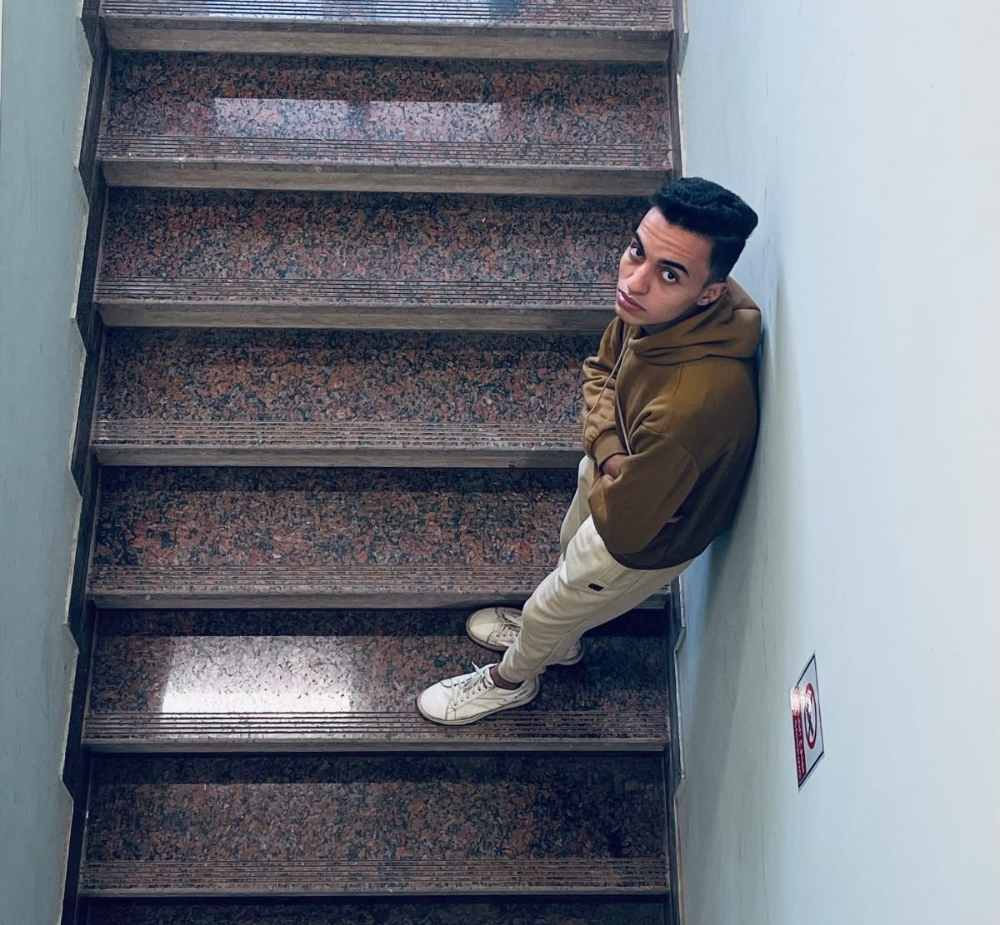

I'm Mahmoud — a frontend & full-stack developer from Egypt. I turn product ideas into fast, accessible interfaces, backed by real APIs and databases, not just static mockups.

Interfaces built with clean markup, deliberate CSS, and JS that doesn't fight the browser.
APIs and data models that hold up under real usage, not just the happy path.
User accounts, roles, and permissions done properly from day one.
I like software that respects the person using it — fast, clear, and built on a backend that doesn't fall over.